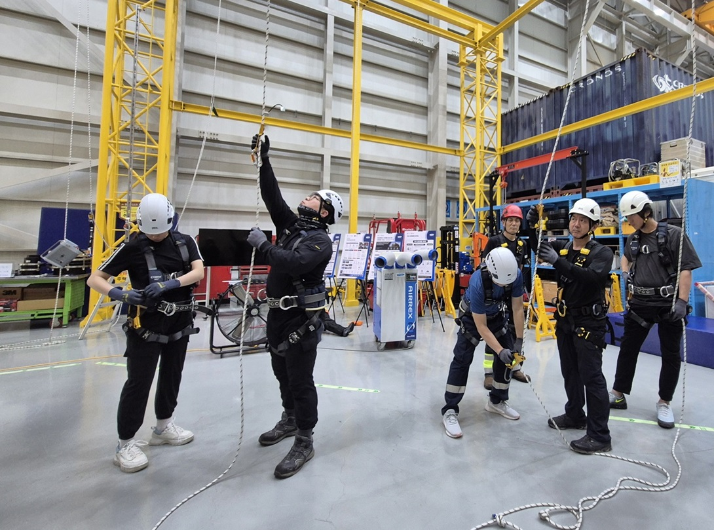
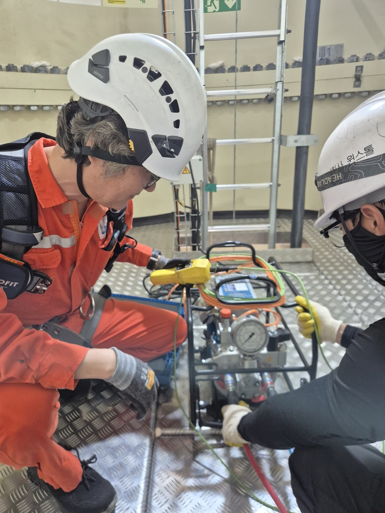
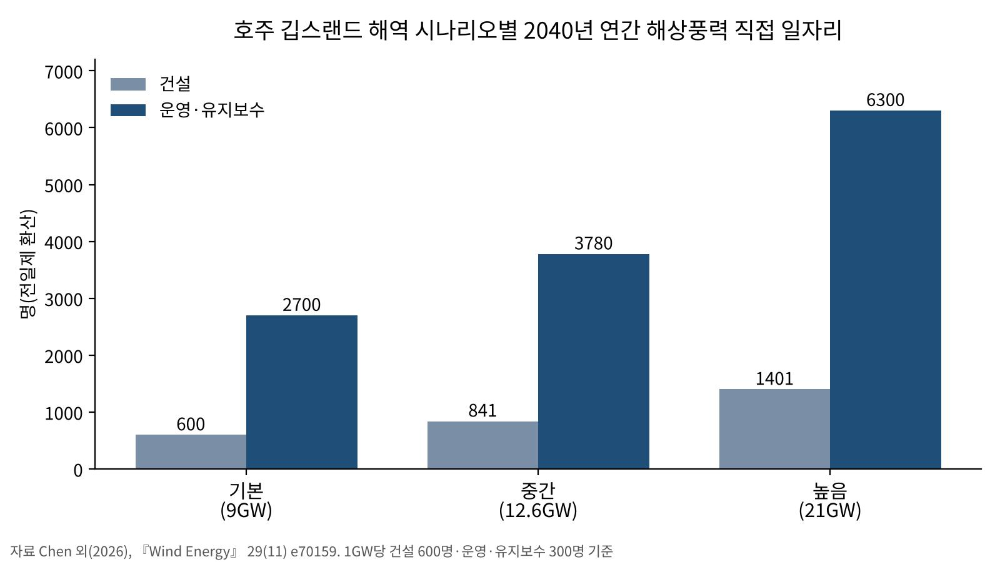

[해상풍력 기획⑤] GWO 교육기관 국내 4곳, 인천 7개 기관 인력 양성 협약
15MW급 터빈 국내 생산·기술이전 계획, 정부 이행 점검 강화
풍력 유지·보수 안전 포인트, 141개 단지에 배포
AI경제저널=김갑봉 기자 | 선박해양플랜트연구소(KRISO·소장 정종진)가 해상풍력 기술교육 3개 과정의 국제인증을 받았다고 지난 10월 29일 밝혔다. 블레이드 수리 과정은 국내 첫 인증이다.
인천시는 인천지역 해상풍력 사업의 상업운전을 2030년 초로 예상했다. 발전기를 세우고 고칠 사람을 어디서 키우는지, 그 사람들이 다룰 기자재는 누가 만드는지 짚는다.
GWO 교육기관 4곳, KRISO 모듈 19종

GWO(Global Wind Organisation)는 세계 풍력기업들이 참여해 안전·기술교육 국제기준을 만드는 비영리 협회다. KRISO에 따르면 교육기관은 과정마다 인증을 받아야 한다. 국내 GWO 교육기관은 KRISO를 포함해 4곳이다.
이번 인증 과정은 블레이드 수리, 기본기술교육, 고급응급처치다. 앞의 둘은 설치·운영·유지보수 전문 기술교육이다. 인증을 더해 KRISO가 제공할 수 있는 교육모듈은 GWO 46종 가운데 19종이 됐다.
KRISO는 그동안 산업인력이 관련 교육을 받으려면 해외 교육기관을 이용해야 했다고 밝혔다. 이번 인증으로 교육비와 항공·숙박비 부담을 줄일 수 있을 것으로 기대했다.

한성종 KRISO 책임기술원은 2030년까지 GWO 모든 교육과정을 국내에 들여오는 것이 목표라고 밝혔다. 정부는 지난해 12월 관계부처 계획에 국내 트레이닝센터를 세우는 방안을 담았다. 터빈 기술을 내재화하려고 베스타스·두산·지멘스 등 터빈사와 협력하는 방안이다.
인천 7개 기관 협약, 고교 시범교육
인천시는 지난 5월 18일 「인천 해상풍력 미래인재 양성 업무협약」을 맺었다. 시교육청, 인천테크노파크, 인하대·인천대 공과대학, 서울대 환경대학원, 에너지전환포럼이 함께했다.
협약에서 인천시는 단지 조성과 산업 육성 정책을 총괄하기로 했다. 시교육청은 초·중·고 연계 교육과 진로 프로그램을 맡기로 했다.
인천테크노파크는 기업 수요 중심 교육과 취업 연계를 맡기로 했다. 인하대와 인천대는 실무형 전문인력 양성과 전환교육을 맡기로 했다.
인천시는 5월 중 계산공업고등학교와 인천소방고등학교에서 시범교육을 할 예정이라고 협약 당시 밝혔다. 교재는 서울대 환경대학원과 에너지전환포럼이 함께 만들었다. 인천시는 계산공업고를 수도권 첫 에너지고등학교로 소개했다.
7개 기관은 교육과정 개발과 현장 실습 프로그램을 단계적으로 추진할 계획이라고 인천시는 밝혔다. 이남주 인천시 미래산업국장은 협약이 지역 산업과 연계한 일자리로 이어지게 지원하겠다고 밝혔다.
영덕 화재 3명 사망, 안전 포인트 배포
지난 3월 23일 경북 영덕군 풍력발전시설에서 정비·점검 작업 중 불이 나 3명이 숨졌다. 고용노동부는 이날 장관이 사고 수습과 재발방지 조치를 긴급 지시했다고 밝혔다.
기후에너지환경부와 고용노동부는 지난 10월 22일 「한눈에 보는 풍력발전 유지·보수 안전 포인트」를 배포한다고 밝혔다. 두 부처가 함께 만들었고, 영덕 화재사고 같은 재해 사례와 현장 의견을 반영했다.
자료는 작업 위치를 타워 하부, 타워 내부, 나셀, 블레이드·허브 등으로 나눴다. 5가지 유지·보수 공정의 안전수칙은 그림과 도표로 담았다. 위험성이 높은 블레이드 작업에는 위험성평가 예시를 실었다.
두 부처는 이 자료를 141개 풍력발전단지와 관련 업계·단체에 보내고 산업안전포털에도 올렸다. 고용노동부는 「재생에너지 안전 작업 가이드(풍력발전)」를 11월에 추가로 배포할 계획이라고 당시 밝혔다. 해상풍력과 설비 설치·해체를 다룬 가이드다.
15MW급 터빈, 국내 생산·기술이전 계획
관계부처는 지난해 12월 10일 「해상풍력 기반시설(인프라) 확충 및 보급 계획」을 내놨다. 계획은 타워·케이블·하부구조물은 경쟁력을 갖췄지만 터빈은 경쟁력이 뒤져 공급망 우려가 있다고 적었다.
계획을 보면 2025년 공공 트랙은 모두 국산 터빈을 쓴다. 2022~2024년 낙찰 사업 대다수는 외산 터빈을 쓸 예정이다.
계획은 세계풍력에너지협의회(GWEC) 2023년 자료를 인용했다. 이 자료에서 미국·중국·유럽연합 국적 상위 10개사의 세계 터빈 시장 점유율은 86%다.
기후에너지환경부는 지난 6월 30일 상반기 입찰에서 5개 사업 1786MW를 뽑았다고 밝혔다. 선정 사업들은 하부구조물·케이블·설치·시공에서 국내 공급망을 쓰겠다는 계획을 냈다.
터빈 계획은 10MW급이 국내 기술 기반이고, 15MW급은 국내 생산과 기술이전을 담았다. 기후에너지환경부는 이 계획들의 이행 점검을 강화할 계획이라고 밝혔다.
기후에너지환경부는 지난 7월 16일 전남 신안우이 해상풍력(390MW급) 착공식을 열었다. 기후에너지환경부는 순수 국내자본으로 15MW급 터빈을 처음 세우는 대규모 해상풍력 사업이라고 소개했다.
터빈을 뺀 핵심 기자재에는 국내 기업이 참여한다. 상업운전 목표는 2029년 1월이다.
호주 21GW, 운영·유지보수 6300명
호주 태즈메이니아대학교 페기 슈링 천(Peggy Shu-Ling Chen) 연구팀은 『윈드 에너지』 제29권 11호에 논문을 실었다. 깁스랜드 해역의 해상풍력 공급망 수요를 모형으로 추정했다.
가장 큰 시나리오는 2040년까지 21GW가 들어서는 경우다. 연구팀은 이때 터빈 1000기 넘게, 설치선 최대 5척이 필요하다고 계산했다. 그해 직접 일자리는 건설 1401명, 운영·유지보수 6300명으로 추정했다. 단위는 전일제 환산이다.
연구팀은 1GW당 건설 600명, 운영·유지보수 300명을 기준으로 삼았다. 빅토리아주 정부 목표인 9GW 시나리오에서는 2040년 운영·유지보수 일자리를 2700명으로 추정했다.

연구팀은 호주의 취약점을 넷으로 꼽았다. 대형 터빈 부품 제조 역량 부재, 항만 기반시설 부족, 설치·지원 선박 확보 제약, 맞춤형 인력 훈련 경로 부족이다. 처방으로는 직업훈련과 고등교육, 다른 업종 인력의 재교육을 묶은 인력 전략을 제시했다.
관계부처 계획은 해상풍력 산업육성방안과 전문인력 양성방안을 2026년에 수립·발표한다고 적었다.
참고문헌
- Peggy Shu-Ling Chen 외 7명, 「Enabling Offshore Wind in Australia: A Supply Chain Modelling Approach to Identifying Infrastructure and Capability Gaps」, 『Wind Energy』 29(11), 와일리, 2026년(온라인 10월 14일), e70159, https://doi.org/10.1002/we.70159
- 관계부처 합동(기후에너지환경부·해양수산부·국방부·금융위원회), 「해상풍력 기반시설(인프라) 확충 및 보급 계획」, 보도자료와 붙임, 2025년 12월 10일
- 기후에너지환경부 해상풍력발전추진단, 「'26년 상반기 해상풍력 입찰 결과 5개 사업 1,786MW 선정」, 보도자료, 2026년 6월 30일, https://eiec.kdi.re.kr/policy/materialView.do?num=283572 (KDI 경제교육·정보센터 게재본)
- 기후에너지환경부 해상풍력발전추진단, 「신안우이 해상풍력 착공, 순수 국내자본 대규모 해상풍력 본격화」, 보도자료, 2026년 7월 16일, https://eiec.kdi.re.kr/policy/materialView.do?num=284313 (KDI 경제교육·정보센터 게재본)
- 고용노동부·기후에너지환경부, 「풍력발전 유지·보수는 안전수칙 확인부터」, 보도자료, 2026년 10월 22일, https://eiec.kdi.re.kr/policy/materialView.do?num=288403 (KDI 경제교육·정보센터 게재본)
- 선박해양플랜트연구소, 「KRISO, 해상풍력 핵심 기술교육 국제인증 획득… 국내 교육 기반 확대」, 보도자료, 2026년 10월 29일, https://www.kriso.re.kr/gallery.es?mid=a10403000000&bid=0019&list_no=1115&act=view
- 고용노동부, 「(참고) 노동부장관, 영덕 풍력발전기 화재사고 관련 사고수습 및 재발방지 조치 철저 긴급지시」, 보도참고자료, 2026년 3월 23일, https://www.moel.go.kr/news/enews/report/enewsView.do?news_seq=19116
- 인천광역시, 「인천시, 해상풍력 미래인재 키운다」, 보도자료, 2026년 5월 18일, https://www.incheon.go.kr/IC010205/view?repSeq=DOM_0000000014717967
[사진 출처]
- [사진 1·2] 선박해양플랜트연구소 제공, 「KRISO, 해상풍력 핵심 기술교육 국제인증 획득… 국내 교육 기반 확대」 보도자료 사진, 2026년 10월 29일, https://www.kriso.re.kr/gallery.es?mid=a10403000000&bid=0019&list_no=1115&act=view
※ 이 기사는 AI 프로그램 클로드를 활용해 작성했습니다.
관련기사
- [해상풍력 기획④] 설치항만 후보로 꼽힌 인천신항, 인천시는 정비 거점 구상
- [해상풍력 기획③] 하반기 해상풍력 입찰 2.2GW, 공공주도 몫 300MW
- [해상풍력 기획②] 인천 공공 해상풍력 1000MW, 연내 전력계통 협의 목표
- [해상풍력 기획①] 인천 해상풍력 섬 주민 몫, 세 제도의 공백
저작권자 © AI경제저널 무단전재 및 재배포, AI학습 및 활용 금지